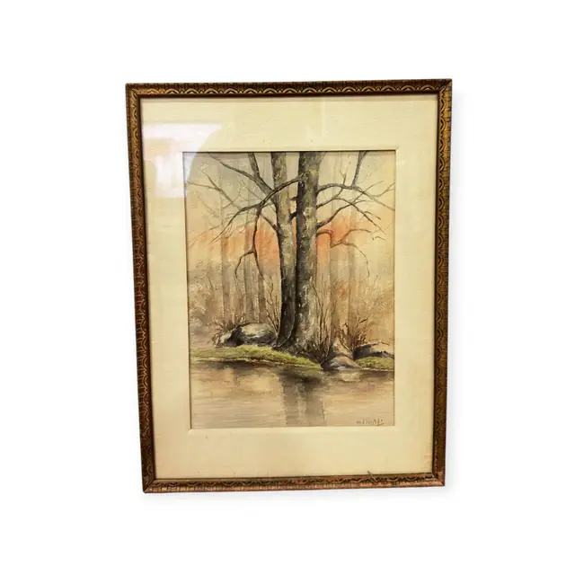
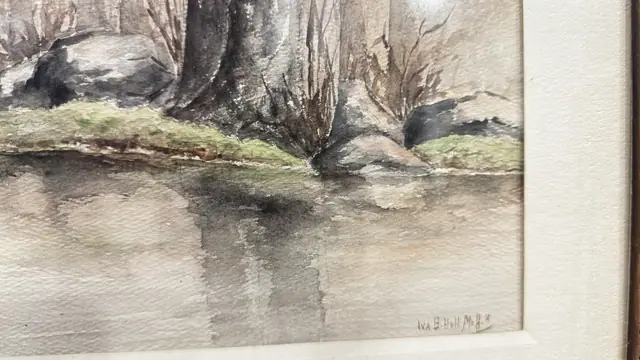
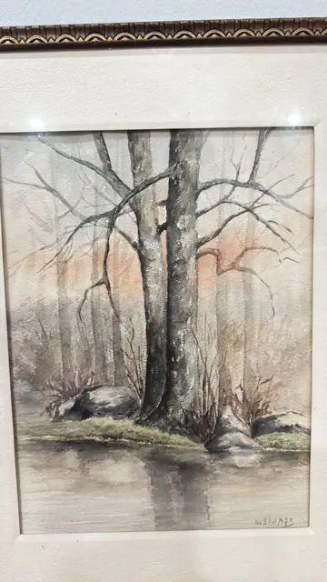

Paintings & Prints
Watercolour of Bare Trees Beside Still Water, Signed, Framed
· mid to late 20th century
Price Upon Request



About the Item
A soft, wet-in-wet watercolour of a bare-branched tree rising from a mossy bank of grey boulders, with slender saplings behind and a pale apricot glow of sky through the winter woods. The bank is mirrored in still water below in long vertical grey and umber reflections. The handling is restrained and atmospheric, with dry-brush twig work over broad washes on textured paper. Colours stay within grey, warm brown, soft green and a blush of pink. Medium: watercolour on paper. Signed lower right of the sheet, reading "Iva B. Hull M.H.". Condition: No visible damage to the image; light glare on the glass and slight toning of the mat.
Details
- Creation Year:
- mid to late 20th century
- Dimensions:
- Height: 17.0 in (43.18 cm)
Width: 13.0 in (33.02 cm)
outside of frame - Medium:
- watercolour on paper
- Period:
- 20Th
- Condition:
- Offered in the condition shown in the photographs.
- Reference Number:
- VO-199
- Documentation:
- no certificate present